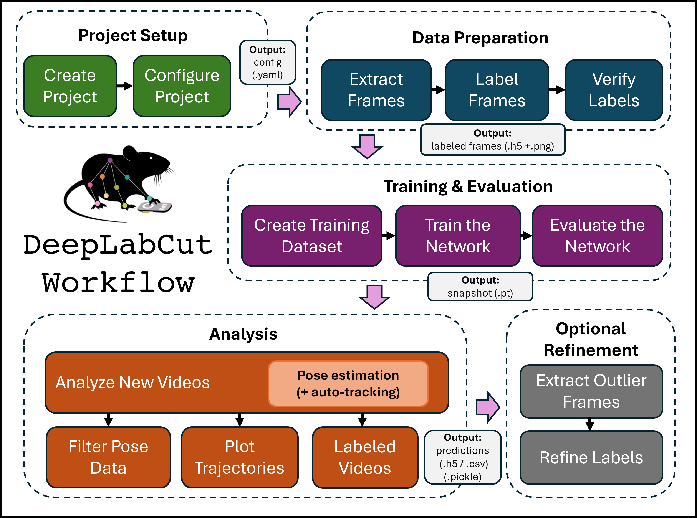
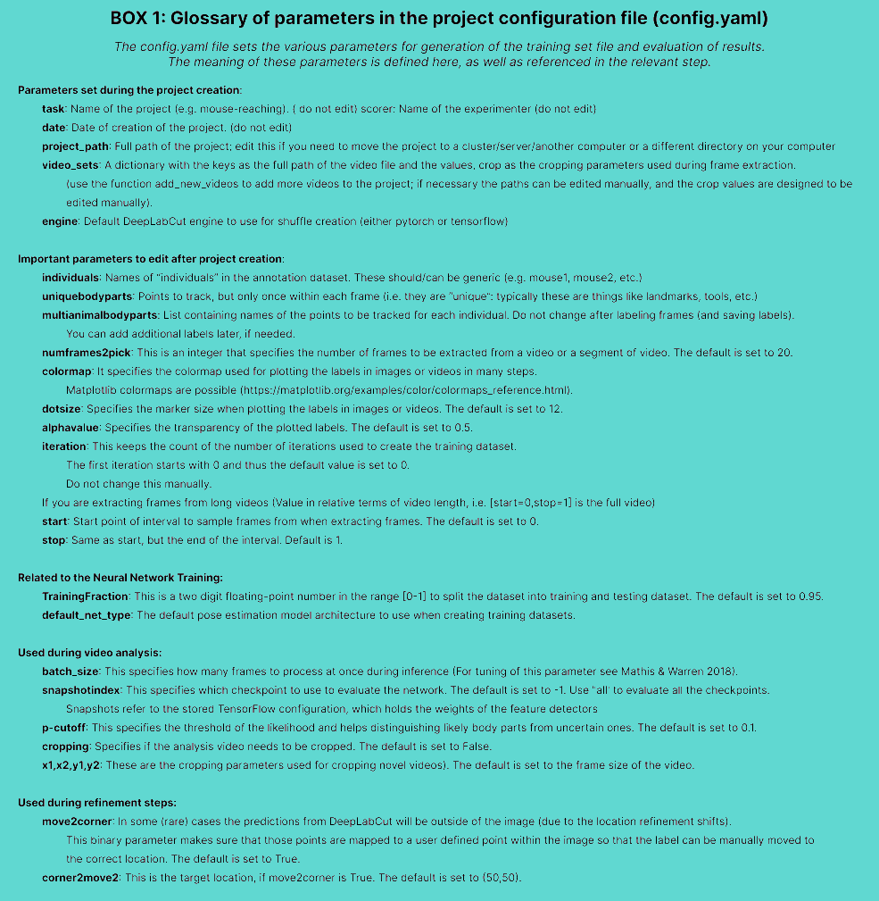
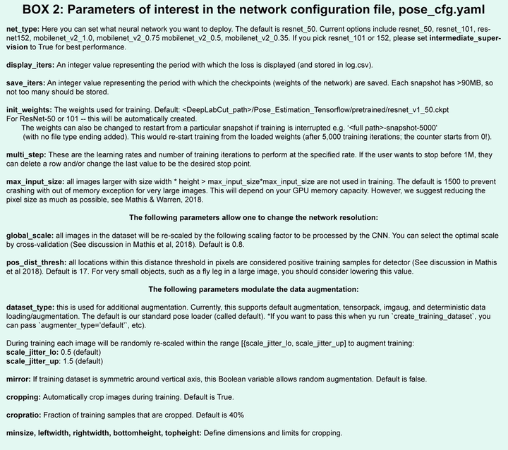

DeepLabCut User Guide#
This guide covers the standard single-animal and multi-animal 2D pose estimation projects.
Getting started#
DeepLabCut offers two equivalent interfaces: a GUI for those who prefer a visual workflow (no Python knowledge required), and a Python API for users who want scripting flexibility or to integrate DeepLabCut into a larger pipeline. All workflow steps are available in both.
We assume you have DeepLabCut installed (if not, see Installing DeepLabCut). Open a terminal and activate your conda environment:
conda activate DEEPLABCUT
Important
On Windows, always open the terminal with administrator privileges: right-click and select “Run as administrator”.
Choose your interface below to launch DeepLabCut:
GUI (recommended for beginners)#
python -m deeplabcut

Fig. 1 The DeepLabCut Project Manager GUI.#
Python API#
In an interactive Python session (e.g. ipython), import DeepLabCut:
import deeplabcut
As a reminder, the core functions are described in our Nature Protocols paper (published at the time of DeepLabCut version 2.0.6). Additional functions and features are continually added to the package; we recommend reading the protocol alongside this documentation.
Workflow#
DeepLabCut’s full workflow is described in steps (A)–(N) below. Code examples throughout this page use the Python API; if you are using the GUI, the same steps are available in the corresponding panels of the Project Manager.
You should think of the workflow as 5 phases

Fig. 2 The 5 phases of the DeepLabCut workflow. The expected outputs are indicated in the grey boxes.#
Project setup: create and configure your new project.
Data preparation: select frames and annotate your training data.
Training and evaluation: configure, train and evaluate your neural network model.
Analysis: run inference with your trained model to create predictions and labeled videos.
Refinement (optional): improve your data quality for a next training iteration.
Automated multi-animal tracking
For multi-animal projects, the video-analysis step contains an automated tracking step. More information is available in the multi-animal tracking guide.
Phase 1 — Project setup#
(A) Create a New Project#
Overview#
The function create_new_project creates a new project directory, required subdirectories, and a basic project
configuration file. Each project is identified by the name of the project (e.g. Reaching), name of the experimenter
(e.g. YourName), as well as the date at creation.
Thus, this function requires the user to input:
The name of the project
The name of the experimenter
The full path of the videos that are (initially) used to create the training dataset.
Optional arguments specify:
The working directory
Where the project directory will be created
Recommended: Whether to copy the videos to the project directory
Whether to create a single- or multi-animal project
Note
If the optional argument working_directory is unspecified, the
project directory is created in the current working directory.
If copy_videos is unspecified symbolic links
for the videos are created in the videos directory.
Each symbolic link creates a reference to a video and thus
eliminates the need to copy the entire video to the video directory (if the videos remain at the original location).
This is why administrator privileges are required for Windows users, as creating symbolic links requires them.
Code example#
deeplabcut.create_new_project(
"Name of the project",
"Name of the experimenter",
["Full path of video 1", "Full path of video 2", "Full path of video 3"],
working_directory="Full path of the working directory",
copy_videos=True,
multianimal=False
)
deeplabcut.create_new_project(
"Name of the project",
"Name of the experimenter",
["Full path of video 1", "Full path of video 2", "Full path of video 3"],
working_directory="Full path of the working directory",
copy_videos=True,
multianimal=True
)
Output & directory structure#
Important
On Windows, input paths as:
r'C:\Users\computername\Videos\reachingvideo1.avi' or
'C:\\Users\\computername\\Videos\\reachingvideo1.avi'
Tip
You can also place config_path in front of deeplabcut.create_new_project to create a variable that holds
the path to the config.yaml file, i.e. config_path=deeplabcut.create_new_project(...)
This set of arguments creates a project directory with the name:
<Name of the project>+<name of the experimenter>+<date of creation of the project>
in the working directory and creates the video copies in the videos directory.
The project directory will have subdirectories:
<Name of the project>+<name of the experimenter>+<date of creation of the project>/
├── dlc-models/
│ ├── iteration-0/
│ ├── iteration-1/
│ └── ...
├── dlc-models-pytorch/
│ ├── iteration-0/
│ │ └── <shuffle directories>/
│ │ ├── train/
│ │ └── test/
│ ├── iteration-1/
│ └── ...
├── labeled-data/
│ └── <video subdirectories>/
├── training-datasets/
├── videos/
└── config.yaml
All the outputs generated during the course of a project will be stored in one of these subdirectories, thus allowing each project to be managed independently of other projects.
Subdirectory layout#
dlc-modelsanddlc-models-pytorch: These directories have the same structure but store model files for different engines:dlc-modelsfor TensorFlowdlc-models-pytorchfor PyTorchAt the top level, both contain iteration folders such as:
iteration-0iteration-1, etc. which correspond to successive rounds of label refinement.Each iteration folder in turn contains shuffle directories, each representing a specific experiment defined by a particular train/test split and model architecture.
Within each shuffle directory:
train/andtest/store metadata and configuration files for the feature detectors.
The
train/folder also stores training checkpoints (snapshots), which let users reload a trained model or resume training from an intermediate checkpoint if training was interrupted.
labeled-data/: Contains the extracted frames used to build the training dataset. Frames from different videos are stored in separate subdirectories, and each frame filename encodes its temporal position in the source video, making it easy to trace each frame back to its origin.training-datasets/: Stores the generated training datasets along with metadata describing how each dataset was created.videos/: Stores either the project videos themselves or symbolic links to them: Ifcopy_videos=False(default), it contains symbolic links. Ifcopy_videos=True, the videos are copied into the directory.
deeplabcut.add_new_videos(
"Full path of the project configuration file",
["full path of video 4", "full path of video 5"],
copy_videos=True/False
)
Hint
The Full path of the project configuration file will be referenced as config_path throughout this guide.
Main configuration file (config.yaml)#
The project directory also contains the main configuration file called config.yaml. The config.yaml file contains many important parameters of the project. This includes:
Task
Scorer
Date
Project_path
A list of videos video_sets.
Important
After creating the project and initial configuration, the task, the scorer and date should not be changed. Many other parameters can still be changed or even need to be changed, such as the list of bodyparts. This is covered in the next section.
API Docs#
Click the button to see API Docs
(B) Configure the Project#
Open the config.yaml file, which was created with create_new_project. You can edit this file in any
text editor.
Familiarize yourself with the meaning of the parameters. For instance it is important to configure the bodyparts, but you can also configure default visualization settings, such as the
colormap (see matplotlib colormaps) in downstream steps, like labeling GUIs, videos, etc.
The project configuration differs between single-animal and multi-animal projects, a complete overview is presented below.
Danger
Please do not include spaces in the names of bodyparts, multianimalbodyparts or Uniquebodyparts.
: Configuration
: Configuration
A complete list of parameters including their description can be found in Box 1.
You must modify individuals, identity, multianimalbodyparts,Uniquebodyparts (explanation below) Note, we also highly recommend that you use more bodyparts that you might be interested in for your experiment, i.e., labeling along the spine/tail for 8 bodyparts would be better than four. This will help the performance.
individuals:
- m1
- m2
- m3
uniquebodyparts:
- topleftcornerofBox
- toprightcornerofBox
multianimalbodyparts:
- snout
- leftear
- rightear
- tailbase
identity: True/False
Individuals: are names of “individuals” in the annotation dataset. These should/can be generic (e.g. mouse1, mouse2, etc.). These individuals are comprised of the same bodyparts defined by
multianimalbodyparts.For annotation in the GUI and training, it is important that all individuals in each frame are labeled. Thus, keep in mind that you need to set individuals to the maximum number in your labeled-data set, .i.e., if there is (even just one frame) with 17 animals then the list should be
- indv1to- indv17.Note, once trained if you have a video with more or less animals, that is fine - you can have more or less animals during video analysis!
Identity: If you can tell the animals apart, i.e., one might have a collar, or a black marker on the tail of a mouse, then you should label these individuals consistently (i.e., always label the mouse with the black marker as “indv1”, etc).
If you have this scenario, please set
identity: Truein yourconfig.yamlfile.If you have 4 black mice, and you truly cannot tell them apart, then leave this as
false.
Multianimalbodyparts: are the bodyparts of each individual (in the above list).
Uniquebodyparts: are points that you want to track, but that appear only once within each frame, i.e. they are “unique”.
Typically these are things like unique objects, landmarks, tools, etc.
They can also be animals, e.g. in the case where one German shepherd is attending to many sheep, the sheep bodyparts would be multianimalbodyparts, the shepherd parts would be uniquebodyparts and the individuals would be the list of sheep (e.g. Polly, Molly, Dolly, …).

Fig. 4 Multi Animal project configuration file glossary#
Phase 2 — Data preparation#
(C) Select Frames to Label#
: Converting single-animal data to multi-animal data
You can use annotated data from single-animal projects, by converting those files.
See the conversion guide for more information.
Overview#
The function extract_frames extracts frames from all the videos in the project configuration file in order to create
a training dataset. The extracted frames from all the videos are stored in a separate subdirectory named after the video
file’s name under the ‘labeled-data’ subfolder.
This function also has various parameters that might be useful based on the user’s need.
Important
A good training dataset should consist of a sufficient number of frames that capture the breadth of the behavior. This ideally implies to select the frames from different (behavioral) sessions, different lighting and different animals, if those vary substantially (to train an invariant, robust feature detector).
Thus for creating a robust network that you can reuse in the laboratory, a good training dataset should reflect the diversity of the behavior with respect to postures, luminance conditions, background conditions, animal identities, etc. of the data that will be analyzed. For the simple lab behaviors comprising mouse reaching, open-field behavior and fly behavior, 100−200 frames gave good results Mathis et al, 2018. However, depending on the required accuracy, the nature of behavior, the video quality (e.g. motion blur, bad lighting) and the context, more or less frames might be necessary to create a good network.
Ultimately, in order to scale up the analysis to large collections of videos with perhaps unexpected conditions, one can also refine the dataset in an adaptive way (see refinement below).
Code example#
deeplabcut.extract_frames(
config_path,
mode="automatic/manual",
algo="uniform/kmeans",
crop=True/False,
userfeedback=False
)
Important
It is advisable to keep the frame size small, as large frames increase the training and inference time. The cropping parameters for each video can be provided in the config.yaml file (and see below).
When running the function extract_frames, if the parameter crop=True, then you will be asked to draw a box within the
GUI (and this is written to the config.yaml file).
Tip
userfeedback allows the user to specify which videos they wish to extract frames from. When set to True, a dialog
will appear, where the user is asked for each video if (additional/any) frames from this video should be
extracted. Use this, e.g. if you have already labeled some folders and want to extract data for new videos.
Frame selection methods#
Select representative frames from videos for labeling.
Frame selection can be performed in three ways:
Uniform random sampling Use when relevant postures and behaviors are distributed throughout the video.
K-means-based selection Use when important behaviors are sparse, brief, or when most frames look similar. The video is downsampled, frames are clustered by visual appearance, and frames are selected from different clusters to improve diversity. This can be slower for large or long videos.
Manual selection Use when you already know which frames are informative and want precise control over the training set.
In brief:
Behavior varies throughout the video -> use uniform sampling.
Behavior is sparse or brief -> use k-means selection.
Specific useful frames are known -> use manual selection.
For best results, restrict frame extraction to video intervals containing the
behaviors of interest using the start and stop parameters in config.yaml.
Aim to label a diverse, representative set of frames rather than simply increasing
the total number of labeled frames.
Important
It is advisable to extract frames from a period of the video that contains interesting behaviors, and not extract the frames across the whole video. This can be achieved by using the start and stop parameters in the config.yaml file. Also, the user can change the number of frames to extract from each video using the numframes2pick in the config.yaml file.
Manual frame selection#
However, picking frames is highly dependent on the data and the behavior being studied. Therefore, it is hard to provide one-size-fits-all code that extracts frames to create a good training dataset for every behavior and animal. If the user feels specific frames are lacking, they can extract hand selected frames of interest using the interactive GUI provided along with the toolbox.
This can be launched by using:
deeplabcut.extract_frames(config_path, "manual")
The user can use the Load Video button to load one of the videos in the project configuration file, use the scroll bar to navigate across the video and grab a frame to extract.
The user can also look at the extracted frames and e.g. delete frames (from the directory) that are too similar before reloading the set and then manually annotating them.
API Docs#
Click the button to see API Docs
(D) Label Frames#
Overview#
The toolbox provides a function label_frames which helps the user to easily label all the extracted frames using an interactive graphical user interface (GUI).
The user should have already named the bodyparts to label (points of interest) in the project’s configuration file by providing a list. The following command invokes the napari-deeplabcut labelling GUI.
Hint
Check out the napari-deeplabcut docs for more information about the labelling workflow.
Code example#
deeplabcut.label_frames(config_path)
Important
It is advisable to consistently label similar spots (e.g., on a wrist that is very large, try to label the same location). In general, invisible or occluded points should not be labeled by the user. They can simply be skipped by not applying the label anywhere on the frame.
: Annotation tips for multi-animal projects
Interacting Animals:
For multi-animal projects with interacting animals, make sure that interaction-frames are well-represented in your training dataset: i.e. make sure that you have labeled frames with closely interacting animals! If interactions do not not frequently occur in the video, it is advised to selecting some interaction-frames manually.Labeling and Identity:
Unless you can visually distinguish the animals, you do not need to maintain a consistent ID across frames. For example, with a white and a black mouse, always label white as animal 1 and black as animal 2. With two indistinguishable black mice, the ID assignment may switch between frames — just be consistent within each frame. If one animal always has a distinguishing feature (e.g., an optical fiber), then label them consistently across all frames
Demo#
Optional: Adding new bodypart labels#
To add more labels to the existing labeled dataset, the user needs to append the new labels to the bodyparts in the config.yaml file. Thereafter, the user can call the function label_frames. A box will pop up and ask the user if they wish to display all parts, or only add in the new labels. Saving the labels after all the images are labelled will append the new labels to the existing labeled dataset.
For more information about the labelling workflow, check out the napari-deeplabcut docs.
(E) Check Annotated Frames#
Overview#
Checking if the labels were created and stored correctly is beneficial for training, since labeling
is one of the most critical parts for creating the training dataset. The DeepLabCut toolbox provides a function
check_labels to do so. It is used as follows:
Code example#
deeplabcut.check_labels(config_path, visualizeindividuals=True/False)
What it creates#
For each video directory in labeled-data this function creates a subdirectory with labeled as a suffix. Those directories contain the frames plotted with the annotated body parts. The user can double check if the body parts are labeled correctly.
If they are not correct, the user can reload the frames (i.e. deeplabcut.label_frames), move them around, and click save again.
: Colors set per individual or body part
You may check and plot colors per individual or per body part, just set the flag visualizeindividuals=True/False.
Note, you can run this twice in both states to see both images.

Fig. 5 Example check_labels output with annotations shown per individual.#
API Docs#
Click the button to see API Docs
Phase 3 — Training & evaluation#
(F) Create Training Dataset#
Important
Only run this step where you are going to train the network. If you label on your laptop but move your project folder to Google Colab or AWS, lab server, etc, then run the step below on that platform! If you labeled on a Windows machine but train on Linux, this is handled automatically (it saves file sets as both Linux and Windows for you).
If you move your project folder, you must only change the
project_path(which is done automatically) in the main config.yaml file - that’s it - no need to change the video paths, etc! Your project is fully portable.Be aware you select your neural network backbone at this stage. As of DLC3+ we support PyTorch (and TensorFlow, but this will be phased out).
Overview#
This function combines the labeled datasets from all the videos and splits them to create train and test datasets. The training data will be used to train the network, while the test dataset will be used for evaluating the network.
Code example#
deeplabcut.create_training_dataset(config_path)
Optional: If the user wishes to benchmark the performance of different training settings, they can create multiple training datasets by specifying an integer value for
num_shuffles; see the docstring for more details.
Output structure and configuration files#
The function creates a new shuffle(s) directory in the dlc-models-pytorch directory (dlc-models if using TensorFlow), in the current “iteration” directory.
The train and test directories each have a configuration file:
pytorch_config.yaml in train and pose_cfg.yaml in test for PyTorch models
pose_cfg.yaml in train and test for TensorFlow models
Specifically, the user can edit the pytorch_config.yaml (or pose_cfg.yaml) within the train subdirectory before starting the training. These configuration files contain meta information with regard to the parameters of the feature detectors.
For more information about the pytorch_config.yaml file, see here For TensorFlow-based models, see key parameters here.
A schematic view of the structure described above is:
<iteration directory>/
└── <shuffle(s) directory>/
├── train/
│ └── pytorch_config.yaml or pose_cfg.yaml
└── test/
└── pose_cfg.yaml
Network and augmentation selection#
At this step, for create_training_dataset you select the network you want to use, and any
additional data augmentation (beyond our defaults). You can set net_type, detector_type (if using a detector)
and augmenter_type when you call the function.
Networks: ImageNet pre-trained networks OR SuperAnimal pre-trained network weights will be downloaded, as you select. You can decide to do transfer-learning (recommended) or “fine-tune” both the backbone and the decoder head. We suggest seeing our dedicated documentation on models for more information ( or the this page on selecting models for the TensorFlow engine).
Hint
🚨 If they do not download (you will see this downloading in the terminal), then you may not have permission to do so - be sure to open your terminal “as an admin” (This is only something we have seen with some Windows users - see the docs for more help!).
Data augmentation: At this stage you can also decide what type of augmentation to
use. Once you’ve called create_training_dataset, you can edit the
pytorch_config.yaml file that was created (or for the
TensorFlow engine, the pose_cfg.yaml file).
PyTorch Engine: Albumentations is used for data augmentation.
See the pytorch_config.yaml for more information about image augmentation options.
TensorFlow Engine: The default augmentation works well for most tasks, but there are many options, more data augmentation, intermediate supervision, etc. Here are the available loaders:
imgaug: a lot of augmentation possibilities, efficient code for target map creation & batch sizes >1 supported. You can set the parameters such as thebatch_sizein thepose_cfg.yamlfile for the model you are training. This is the recommended default!crop_scale: our standard DLC 2.0 introduced in Nature Protocols variant (scaling, auto-crop augmentation)tensorpack: a lot of augmentation possibilities, multi CPU support for fast processing, target maps are created less efficiently than in imgaug, does not allow batch size>1deterministic: only useful for testing, freezes numpy seed; otherwise like default.
: Augmentation details (TensorFlow)
Only imgaug augmentation is available for multi-animal projects with the TensorFlow
engine.
Image cropping is part of the augmentation pipeline — crops are no longer stored
in labeled-data/..._cropped folders as in older versions. The crop size defaults to
(400, 400). If your images are very large (e.g. 2K or 4K pixels), consider
increasing the crop size, but be aware that unless you have a GPU with ≥24 GB memory
you may hit out-of-memory errors. Lowering the batch size can help, but may affect
performance.
You can also specify a crop sampling strategy (editable in the pose_cfg.yaml
before training):
uniform— crop centers are drawn at random over the image.keypoints— crop centers are drawn at annotated keypoint locations.density— crops focus on regions with high body-part density.hybrid— combinesuniformanddensityfor a balanced strategy (default).
See Mathis et al., 2020 — A Primer on Motion Capture with Deep Learning
(Fig. 8) for a worked example of the benefit of data augmentation with imgaug and
exploiting the symmetries of your data.
Model comparison#
You can also test several models by creating the same train/test split for different networks. You can easily do this in the Project Manager GUI (by selecting the “Use an existing data split” option), which also lets you compare PyTorch and TensorFlow models.
Added in version 3.0.0: You can now create new shuffles using the same train/test split as
existing shuffles with create_training_dataset_from_existing_split.
This allows you to compare model performance (between different architectures or when using different training hyper-parameters) as the shuffles were trained on the same data, and evaluated on the same test data!
Example usage - creating 3 new shuffles (with indices 10, 11 and 12) for a ResNet 50 pose estimation model, using the same data split as was used for shuffle 0:
deeplabcut.create_training_dataset_from_existing_split(
config_path,
from_shuffle=0,
shuffles=[10, 11, 12],
net_type="resnet_50",
)
API Docs#
Click the button to see API Docs for deeplabcut.create_training_dataset
Click the button to see API Docs for deeplabcut.create_training_model_comparison
Click the button to see API Docs for deeplabcut.create_training_dataset_from_existing_split
(G) Train the Network#
Overview#
The function train_network helps the user in training the network. It is used as follows:
Code example#
deeplabcut.train_network(config_path)
The set of arguments in the function starts training the network for the dataset created for one specific shuffle. Note that you can change training parameters in the pytorch_config.yaml file (or pose_cfg.yaml for TensorFlow models) of the model that you want to train (before you start training).
At user-specified iterations during training checkpoints are stored in the subdirectory train under the respective iteration & shuffle directory.
Tips on training models with the PyTorch Engine
Example parameters that one can call:
deeplabcut.train_network(
config_path,
shuffle=1,
trainingsetindex=0,
device="cuda:0",
max_snapshots_to_keep=5,
displayiters=100,
save_epochs=5,
epochs=200,
)
PyTorch models in DeepLabCut 3.0 are trained for a set number of epochs, instead of a maximum number of iterations (which is what was used for TensorFlow models). An epoch is a single pass through the training dataset, which means your model has seen each training image exactly once. So if you have 64 training images for your network, an epoch is 64 iterations with batch size 1 (or 32 iterations with batch size 2, 16 with batch size 4, etc.).
By default, the pretrained networks are not in the DeepLabCut toolbox (as they can be more than 100MB), but they get downloaded automatically before you train.
If the user wishes to restart the training at a specific checkpoint they can specify the
full path of the checkpoint to the variable resume_training_from in the
pytorch_config.yaml file (checkout the “Restarting Training at a Specific Checkpoint”
section of the docs) under the train subdirectory.
Tip: It is recommended to train the networks until the loss plateaus (depending on the dataset, model architecture and training hyper-parameters this happens after 100 to 250 epochs of training).
The variables display_iters and save_epochs in the pytorch_config.yaml file allow the user to alter how often the loss is displayed
and how often the weights are stored. We suggest saving every 5 to 25 epochs.
Tips on training models with the TensorFlow Engine
Example parameters that one can call:
deeplabcut.train_network(
config_path,
shuffle=1,
trainingsetindex=0,
gputouse=None,
max_snapshots_to_keep=5,
autotune=False,
displayiters=100,
saveiters=25000,
maxiters=300000,
allow_growth=True,
)
By default, the pretrained networks are not in the DeepLabCut toolbox (as they are around 100MB each), but they get downloaded before you train. However, if not previously downloaded from the TensorFlow model weights, it will be downloaded and stored in a subdirectory pre-trained under the subdirectory models in Pose_Estimation_Tensorflow. At user specified iterations during training checkpoints are stored in the subdirectory train under the respective iteration directory.
If the user wishes to restart the training at a specific checkpoint they can specify the
full path of the checkpoint to the variable init_weights in the pose_cfg.yaml
file under the train subdirectory (see Box 2).
Tip: It is recommended to train the networks for thousands of iterations until the loss plateaus (typically around 500,000) if you use batch size 1. If you want to batch train, we recommend using Adam, see more here.
The variables display_iters and save_iters in the pose_cfg.yaml file allows
the user to alter how often the loss is displayed and how often the weights are stored.
maDeepLabCut recommendation: For multi-animal projects we are using not only
different and new output layers, but also new data augmentation, optimization, learning
rates, and batch training defaults. Thus, please use a lower save_iters and
maxiters. I.e. we suggest saving every 10K-15K iterations, and only training until
50K-100K iterations. We recommend you look closely at the loss to not overfit on your
data. This will reduce your training time.

Fig. 6 Single-animal TensorFlow configuration file glossary#
API Docs#
Click the button to see API Docs for train_network
(H) Evaluate the Trained Network#
Overview#
It is important to evaluate the performance of the trained network. This performance is measured by computing the average root mean square error (RMSE) between the manual labels and the ones predicted by DeepLabCut. The RMSE is saved as a comma-separated file and displayed for all pairs and only likely pairs (\(>p_{\text{cutoff}}\)).
This helps to exclude, for example, occluded body parts. One of the strengths of DeepLabCut is that due to the probabilistic output of the scoremap, it can, if sufficiently trained, also reliably report if a body part is visible in a given frame. (see discussions of finger tips in reaching and the Drosophila legs during 3D behavior in Mathis et al, 2018).
For multi-animal projects, two additional metrics are reported alongside RMSE: Mean Average Precision (mAP) and Mean Average Recall (mAR). These describe how precisely and completely the model detects individuals across frames, and are more informative than RMSE alone when multiple animals are present.
: mAP and mAR explained
For multi-animal pose estimation the model can produce multiple detections per image. mAP and mAR estimate precision and recall by sweeping over different thresholds of “correctness” and averaging the results. Correctness is evaluated through object-keypoint similarity (OKS).
A good resource is the Stanford CS230 course notes on mAP (written for object detection with bounding boxes, but the same concept applies here with OKS instead of IoU).
Unlike RMSE — which is computed per body part over all frames — mAP/mAR capture whether the correct number of individuals was detected and whether each individual’s keypoints were assigned correctly, making them the primary metrics for judging multi-animal tracking readiness.
Code example#
deeplabcut.evaluate_network(config_path, Shuffles=[1], plotting=True)
Setting plotting to True plots all the testing and training frames with the manual and predicted labels
(colored by body part by default). For multi-animal projects you can also pass plotting="individual" to color
predictions by individual instead. The user should visually check the labeled test (and training) images that are
created in the ‘evaluation-results’ directory.
Ideally, DeepLabCut labeled unseen (test images) according to the user’s required accuracy, and the average train and test errors are comparable (good generalization). What (numerically) comprises an acceptable RMSE depends on many factors (including the size of the tracked body parts, the labeling variability, etc.). Note that the test error can also be larger than the training error due to human variability (in labeling, see Figure 2 in Mathis et al, Nature Neuroscience 2018).
Optional parameters#
Shuffles: list, optional- List of integers specifying the shuffle indices of the training dataset. The default is [1]plotting: bool | str, optional- Plots the predictions on the train and test images. The default isFalse; if provided it must be eitherTrue,False,"bodypart", or"individual".show_errors: bool, optional- Display train and test errors. The default isTruecomparisonbodyparts: list of bodyparts, Default is all- The average error will be computed for those body parts only (Has to be a subset of the body parts).gputouse: int, optional- Natural number indicating the number of your GPU (see number in nvidia-smi). If you do not have a GPU, put None. See: https://nvidia.custhelp.com/app/answers/detail/a_id/3751/~/useful-nvidia-smi-queriespcutoff: float | list[float] | dict[str, float], optional(Only applicable when using the PyTorch engine. For TensorFlow, setpcutoffin theconfig.yamlfile.) Specifies the cutoff value(s) used to compute evaluation metrics.If
None(default), the cutoff will be loaded from the project configuration.To apply a single cutoff value to all bodyparts, provide a
float.To specify different cutoffs per bodypart, provide either:
A
list[float]: one value per bodypart, with an additional value for each unique bodypart if applicable.A
dict[str, float]: where keys are bodypart names and values are the corresponding cutoff values. If a bodypart is not included in the provided dictionary, a defaultpcutoffof0.6will be used for that bodypart.
The plots can be customized by editing the config.yaml file (i.e., the colormap, scale, marker size (dotsize), and transparency of labels (alphavalue) can be modified). By default each body part is plotted in a different color (governed by the colormap) and the plot labels indicate their source.
Important
Note that by default:
Human labels are plotted as plus (\(+\))
DeepLabCut’s predictions either as:
dot (\(\cdot\)) for confident predictions with likelihood \(> p_{\text{cutoff}}\)
cross (\(\times\)) for (likelihood \(\leq p_{\text{cutoff}}\)).
Output and interpretation#
The evaluation results for each shuffle of the training dataset are stored in a unique subdirectory in a newly created directory ‘evaluation-results-pytorch’ (‘evaluation-results’ for TensorFlow models) in the project directory.
The user can visually inspect if the distance between the labeled and the predicted body parts are acceptable. In the event of benchmarking with different shuffles of same training dataset, the user can provide multiple shuffle indices to evaluate the corresponding network.
Note that with multi-animal projects additional distance statistics aggregated over animals or bodyparts are also stored in that directory. This aims at providing a finer quantitative evaluation of multi-animal prediction performance before animal tracking.
If the generalization is not sufficient, the user might want to:
Check if the labels were imported correctly; i.e., invisible points are not labeled and the points of interest are labeled accurately
Make sure that the loss has already converged
Consider labeling additional images and make another iteration of the training dataset
: Skeleton selection and map inspection
In multi-animal projects, model evaluation is crucial because this is when the data-driven selection of the optimal skeleton is carried out. Skipping this step causes video analysis to use the redundant skeleton by default, which is slower and does not guarantee best performance.
You should also plot the scoremaps, locref layers, and PAFs (for relevant models) to assess detection quality before proceeding to video analysis.
Optional maps#
Optional: You can also plot the scoremaps, locref layers, and PAFs:
deeplabcut.extract_save_all_maps(config_path, shuffle=shuffle, Indices=[0, 5])
you can drop Indices to run this on all training/testing images (this is slow!)
API Docs#
Click the button to see API Docs
Important
Before moving on, make a deliberate decision about whether the pose estimation quality is sufficient. If you do not have good pose estimation evaluation metrics at this point, please revisit the original labels, add more training data and refine the model rather than proceeding with the current results.
Phase 4 — Analysis#
(I) Analyze New Videos#
Overview#
The trained network can be used to analyze new videos. These videos do not need to be in the config file! You can analyze new videos with the following line of code:
deeplabcut.analyze_videos(
config_path, ["fullpath/analysis/project/videos/reachingvideo1.avi"],
save_as_csv=True
)
There are several other optional inputs to control the device, the output format, dynamic cropping parameters, etc:
deeplabcut.analyze_videos(
config_path,
videos,
video_extensions="avi",
shuffle=1,
trainingsetindex=0,
device=None,
save_as_csv=False,
destfolder=None,
dynamic=(True, .5, 10)
)
: Automated tracking
For multi-animal projects, the video analysis is slightly more complex compared to single-animal projects: besides bare keypoint estimation, the keypoints need to be assigned to one of the different individuals and coherently tracked across frames. This tracking procedure is automated by default, but it is worthwhile to understand the details, which are discussed in the multi-animal tracking guide.
Disabling automated tracking
After bare pose estimation, multi-animal tracking is applied by default (auto_track=True). This produces an .h5 file
that is ready for downstream use. To disable the automated tracking step and inspect raw detections before tracking,
pass auto_track=False explicitly to deeplabcut.analyze_videos. No .h5 file will be produced - only a .pickle.
The results can be visualized by running:
deeplabcut.create_video_with_all_detections(
config_path,
videos_to_analyze
)
Conditional top-down tracking
For conditional top-down (CTD) models, tracking can be performed inside the model, using temporal context from
previous frames to condition predictions on the current frame. This is a distinct mechanism from auto_track.
Pass ctd_tracking=True to deeplabcut.analyze_videos when using any model whose name starts with ctd_.
When ctd_tracking=True, post-processing tracking (auto_track) is skipped automatically.
Output and storage#
The user can choose which checkpoint to use for video analysis by setting the corresponding checkpoint index in the
snapshotindex variable of the config.yaml file. By default, the most recent checkpoint (i.e., last) is used for
video analysis.
The labels are stored in a MultiIndex Pandas DataFrame, containing the network name, body part name, (x, y) label positions in pixels, and the likelihood for each body part in each frame. These arrays are stored in an efficient Hierarchical Data Format (HDF) in the same directory, where the video is stored.
If the save_as_csv flag is set to True, the data can also be exported in comma-separated values (.csv) format, which can be imported into many programs such as MATLAB, R, and Prism. By default, this flag is set to False.
You can also specify a destination folder (destfolder) for the output files by providing the path to the folder where you would like the results to be written.
Dynamic-cropping of videos#
If you have large frames and the animal/object occupies a smaller fraction, you can crop around your animal/object to make processing speeds faster. For example, if you have a large open
field experiment but only track the mouse, this will speed up your analysis (also helpful for real-time applications).
To use this simply add dynamic=(True,.5,10) when you call analyze_videos.
dynamic: tuple containing (state, detectionthreshold, margin)
If state is True, then dynamic cropping will be performed.
That means that if an object is detected (i.e., any body part likelihood > detectionthreshold),
then object boundaries are computed according to the smallest/largest x position and
smallest/largest y position of all body parts.
This window is expanded by margin and from then on only the posture within this crop is analyzed (until the object is lost;
i.e., < detectionthreshold).
The current position is utilized for updating the crop window for the next frame (this is why the margin is important and should be set large enough given the movement of the animal).
API Docs#
Click the button to see API Docs
(J) Filter Pose Data#
Overview#
You can also filter the predictions with a median filter (default) or with a SARIMAX model, if you wish.
This creates a new .h5 file with the ending *_filtered that you can use in create_labeled_video and/or plot_trajectories.
Code examples#
deeplabcut.filterpredictions(
config_path,
["fullpath/analysis/project/videos/reachingvideo1.avi"]
)
An example call:
deeplabcut.filterpredictions(
config_path,
["fullpath/analysis/project/videos"],
video_extensions=".mp4",
filtertype="arima",
ARdegree=5,
MAdegree=2
)
Here are parameters you can modify and pass:
deeplabcut.filterpredictions(
config_path,
["fullpath/analysis/project/videos/reachingvideo1.avi"],
shuffle=1,
trainingsetindex=0,
filtertype="arima",
p_bound=0.01,
ARdegree=3,
MAdegree=1,
alpha=0.01
)
Example output#
Here is an example of how this can be applied to a video:

Fig. 7 Example output of filterpredictions applied to a video.#
API Docs#
Click the button to see API Docs
(K) Plot Trajectories#
Overview#
The plotting components of this toolbox utilize matplotlib. Therefore, these plots can easily be customized by the end user. We also provide a function to plot the trajectory of the extracted poses across the analyzed video (see Fig. 8 and Fig. 9).
Tip
Before creating labeled videos, set the pcutoff threshold in config.yaml. For a
well-trained network this should be high, e.g. 0.8 or higher. If you filled in gaps,
set it to 0 to make those interpolated points visible.
You can determine a good pcutoff value by inspecting the likelihood plot produced by
plot_trajectories:
Code example#
deeplabcut.plot_trajectories(config_path, ['fullpath/analysis/project/videos/reachingvideo1.avi'])
Output#
It creates a folder called plot-poses (in the directory of the video). The plots display the coordinates of body parts
vs. time, likelihoods vs time, the x- vs. y- coordinate of the body parts, as well as histograms of consecutive
coordinate differences. These plots help the user to quickly assess the tracking performance for a video. Ideally, the
likelihood stays high and the histogram of consecutive coordinate differences has values close to zero (i.e. no jumps in
body part detections across frames). Example outputs are shown below.

Fig. 8 Example video frame with tracked body parts overlaid.#

Fig. 9 Example plot_trajectories output: body part coordinates, likelihoods, and consecutive displacement histograms.#
API Docs#
Click the button to see API Docs
(L) Create Labeled Videos#
Overview#
Additionally, the toolbox provides a function to create labeled videos based on the extracted poses by plotting the labels on top of the frame and creating a video. There are two modes to create videos: ‘fast’ and ‘slow’ (but higher quality). One can use the command as follows to create multiple labeled videos:
Code example#
deeplabcut.create_labeled_video(
config_path,
["fullpath/analysis/project/videos/reachingvideo1.avi",
"fullpath/analysis/project/videos/reachingvideo2.avi"],
save_frames = True/False
)
Optionally, if you want to use the filtered data for a video or directory of filtered videos pass filtered=True,
i.e.:
deeplabcut.create_labeled_video(
config_path,
["fullpath/afolderofvideos"],
video_extensions=".mp4",
filtered=True
)
You can also optionally add a skeleton to connect points and/or add a history of points for visualization
(see Fig. 10). To set the “trailing points” you need to pass trailpoints:
deeplabcut.create_labeled_video(
config_path,
["fullpath/afolderofvideos"],
video_extensions=".mp4",
trailpoints=10
)
The create_labeled_video function contains a lot of other parameters that can be configured to tailor your output
video. (Note that displayedindividuals, color_by, track_method, and displaycropped are multi-animal-specific).
deeplabcut.create_labeled_video(
config_path,
[videos],
video_extensions='avi',
shuffle=1,
trainingsetindex=0,
filtered=False,
fastmode=True,
save_frames=False,
keypoints_only=False,
Frames2plot=None,
displayedbodyparts='all',
displayedindividuals='all',
codec='mp4v',
outputframerate=None,
destfolder=None,
draw_skeleton=False,
trailpoints=0,
displaycropped=False,
color_by='bodypart',
track_method='',
)
Skeleton configuration#
To draw a skeleton, you need to first define the pairs of connected nodes (in the config.yaml file) and set the
skeleton color (in the config.yaml file).
There is also a GUI to help you do this, used by calling deeplabcut.SkeletonBuilder(config_path), where config_path is the path to your project’s config.yaml file on disk.
Here is how the config.yaml additions/edits should look (for example, on the Openfield demo data we provide):
# Plotting configuration
skeleton:
- ["snout", "leftear"]
- ["snout", "rightear"]
- ["leftear", "tailbase"]
- ["leftear", "rightear"]
- ["rightear", "tailbase"]
skeleton_color: white
pcutoff: 0.4
dotsize: 4
alphavalue: 0.5
colormap: jet
Then pass draw_skeleton=True with the command:
deeplabcut.create_labeled_video(
config_path,
["fullpath/afolderofvideos"],
video_extensions=".mp4",
draw_skeleton=True
)
You can create a video with only the “dots” plotted, i.e., in the
style of Johansson, by passing keypoints_only=True:
deeplabcut.create_labeled_video(
config_path,["fullpath/afolderofvideos"],
video_extensions=".mp4",
keypoints_only=True
)
Tip
The best quality videos are created when fastmode=False is passed. Therefore, when
trailpoints and draw_skeleton are used, we highly recommend you also pass fastmode=False!

Fig. 10 Labeled video with skeleton overlay and trailing points (draw_skeleton=True, trailpoints=10).#
This function has various other parameters, in particular the user can set the colormap, the dotsize, and
alphavalue of the labels in config.yaml file.
API Docs#
Click the button to see API Docs
Extract “Skeleton” Features#
Overview#
You can save the “skeleton” that was applied in create_labeled_videos for more computations.
Namely, it extracts length and orientation of each “bone” of the skeleton as defined in the config.yaml file. You
can use the function by:
Code example#
deeplabcut.analyzeskeleton(
config_path,
video,
video_extensions="avi",
shuffle=1,
trainingsetindex=0,
save_as_csv=False,
destfolder=None
)
API Docs#
Click the button to see API Docs
Phase 5 — Refinement (optional)#
(M) Optional Active Learning - Network Refinement: Extract Outlier Frames#
Overview#
While DeepLabCut typically generalizes well across datasets, one might want to optimize its performance in various, perhaps unexpected, situations. For generalization to large datasets, images with insufficient labeling performance can be extracted, manually corrected by adjusting the labels to increase the training set and iteratively improve the feature detectors. Such an active learning framework can be used to achieve a predefined level of confidence for all images with minimal labeling cost (discussed in Mathis et al 2018). Then, due to the large capacity of the neural network that underlies the feature detectors, one can continue training the network with these additional examples. One does not necessarily need to correct all errors as common errors could be eliminated by relabeling a few examples and then re-training. A priori, given that there is no ground truth data for analyzed videos, it is challenging to find putative “outlier frames”. However, one can use heuristics such as the continuity of body part trajectories, to identify images where the decoder might make large errors.
All this can be done for a specific video by typing (see other optional inputs below):
Code example#
deeplabcut.extract_outlier_frames(config_path, ["videofile_path"])
Frame-selection methods#
We provide various frame-selection methods for this purpose. In particular the user can set:
outlieralgorithm: "fitting", "jump", or "uncertain"
outlieralgorithm="uncertain": select frames if the likelihood of a particular or all body parts lies belowp_bound(note this could also be due to occlusions rather than errors).outlieralgorithm="jump": select frames where a particular body part or all body parts jumped more thanepsilonpixels from the last frame.outlieralgorithm="fitting": select frames if the predicted body part location deviates from a state-space model fit to the time series of individual body parts. Specifically, this method fits an Auto Regressive Integrated Moving Average (ARIMA) model to the time series for each body part. Thereby each body part detection with a likelihood smaller thanp_boundis treated as missing data. Putative outlier frames are then identified as time points, where the average body part estimates are at leastepsilonpixels away from the fits. The parameters of this method areepsilon,p_bound, the ARIMA parameters as well as the list of body parts to average over (can also beall).outlieralgorithm="manual": manually select outlier frames based on visual inspection from the user.
As an example:
deeplabcut.extract_outlier_frames(config_path, ["videofile_path"], outlieralgorithm="manual")
Selection after detection#
In general, depending on the parameters, these methods might return many more frames than the user wants to
extract (numframes2pick). Thus, this list is then used to select outlier frames either by randomly sampling from
this list (extractionalgorithm="uniform"), by performing extractionalgorithm="kmeans" clustering on the
corresponding frames.
In the automatic configuration, before the frame selection happens, the user is informed about the amount of frames
satisfying the criteria and asked if the selection should proceed. This step allows the user to perhaps change the
parameters of the frame-selection heuristics first (i.e. to make sure that not too many frames are qualified). The user
can run the extract_outlier_frames method iteratively, and (even) extract additional frames from the same video.
Once enough outlier frames are extracted the refinement GUI can be used to adjust the labels based on user feedback
(see below).
API Docs#
Click the button to see API Docs
(N) Refine Labels: Augmentation of the Training Dataset#
Overview#
Based on the performance of DeepLabCut, four scenarios are possible:
Visible body part with accurate DeepLabCut prediction. These labels do not need any modifications.
Visible body part but wrong DeepLabCut prediction. Move the label’s location to the actual position of the body part.
Invisible, occluded body part. Remove the predicted label by DeepLabCut with a middle click. Every predicted label is shown, even when DeepLabCut is uncertain. This is necessary, so that the user can potentially move the predicted label. However, to help the user to remove all invisible body parts the low-likelihood predictions are shown as open circles (rather than disks).
Invalid images: In the unlikely event that there are any invalid images, the user should remove such an image and their corresponding predictions, if any. Here, the GUI will prompt the user to remove an image identified as invalid.
The labels for extracted putative outlier frames can be refined by opening the GUI:
Code example#
deeplabcut.refine_labels(config_path)
This will launch a GUI where the user can refine the labels.
Please refer to the napari-deeplabcut docs for more information about the labelling workflow.
Merge datasets#
After correcting the labels for all the frames in each of the subdirectories, the users should merge the dataset to create a new dataset. In this step the iteration parameter in the config.yaml file is automatically updated.
deeplabcut.merge_datasets(config_path)
Once the dataset is merged, the user can test if the merging process was successful by plotting all the labels (Step E).
Next, with this expanded training set the user can now create a new training set and train the network as described
in Steps F and G. The training dataset will be stored in the same place as before but under a different iteration-#
subdirectory, where the # is the new value of iteration variable stored in the project’s configuration file
(this is automatically done).
Now you can run create_training_dataset, then train_network, etc. If your original labels were adjusted at all,
start from fresh weights (which is generally recommended), otherwise consider using your already trained network
weights (see Box 2).
If after training the network generalizes well to the data, proceed to analyze new videos. Otherwise, consider labeling more data.
API Docs for deeplabcut.refine_labels#
Click the button to see API Docs
API Docs for deeplabcut.merge_datasets#
Click the button to see API Docs
Resources and further reading#
Jupyter notebooks demo#
We also provide two Jupyter notebooks for using DeepLabCut on both a pre-labeled dataset, and on the end user’s own dataset.
Firstly, we prepared an interactive Jupyter notebook called Demo_yourowndata.ipynb that can serve as a template for the user to develop a project.
Furthermore, we provide a notebook for an already started project with labeled data. The example project, named as Reaching-Mackenzie-2018-08-30 consists of a project configuration file with default parameters and 20 images, which are cropped around the region of interest as an example dataset. These images are extracted from a video, which was recorded in a study of skilled motor control in mice. Some example labels for these images are also provided. See more details here.
3D tracking#
For stereo or multi-camera setups, see the 3D overview.
Additional helper functions#
A collection of optional utility functions is available in the helper functions reference.